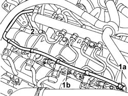

1060F52 PIPE from INJECTORS to FUEL RECOVERY MANIFOLD - R&R
- Path
- Procedures > 10 ENGINE > 1060 DIESEL FUEL INJECTION SYSTEM > 1060F INJECTORS AND LINES > 1060F52 PIPE from INJECTORS to FUEL RECOVERY MANIFOLD - R&R
- Kind
- repair procedure (removal / refitting; the operation number is the code)
- Applies to
- engines: 2.4 JTD 20V; all production periods
- Interactive page
- https://sloeber94.github.io/elrnDB-lThss/en/#/850546
Applies to: engines: 2.4 JTD 20V; all production periods
 Removing
Removing
 Refitting
RefittingSee in Op. 1016A10 SOUND-PROOFING COVER - R.R.
1. Push clips (1a) by hand and disconnect the pipe from the injectors to the fuel recovery manifold (1b), injector side, and move aside.
2. Disconnect the pipe from the injectors to the fuel recovery manifold from the fuel recovery manifold and remove.

Applies to: engines: 2.4 JTD 20V; all production periods
Refitting
Removing- Fit the pipe from the injectors to the fuel recovery manifold and connect to the fuel recovery manifold.
- Connect the pipe from the injectors to the fuel recovery manifold to the injectors and push home until the clips click into place.